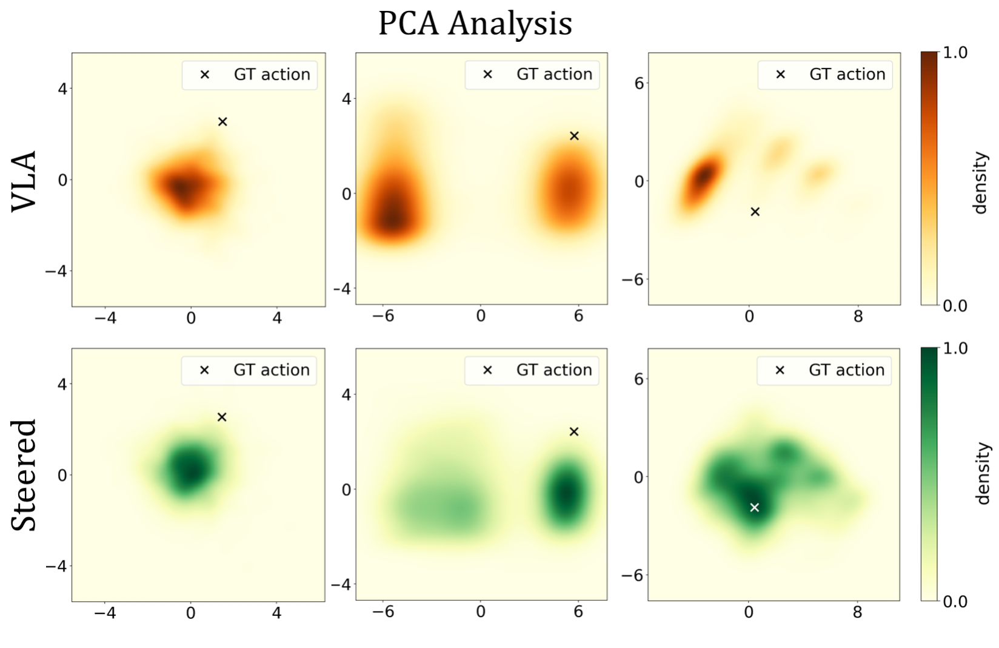

RL2-VLA: Adaptive RL Latent Compositional Steering with Test-Time Scaling for Vision-Language-Action Models
Despite the impressive visuomotor capabilities of Vision-Language-Action (VLA) models, their performance often degrades on challenging and out-of-domain tasks. We introduce RL2, an adaptive inference-time steering framework that leverages Reinforcement Learning on VLA Latents. We train a lightweight offline RL flow-matching policy conditioned on expressive latents from the VLA action expert, and steers the base VLA by composing their action expert flow velocities during inference. We further discover that inference-time steering follows fundamentally different scaling laws under success and failure states — action diversity is most beneficial when the base VLA is likely to fail — RL2 therefore activates compositional steering only when failure is predicted.
SAFE detection meets compositional steering
The baselines struggle while RL2 succeeds via adaptive steering. The Failure Detection panel shows when the failure probability crosses the conformal (CP) band and applies compositional steering (click on numbered keypoints for explanations).
Overall architecture
Consistent gains across simulation and hardware
Diversification is most useful during failure (e.g. RL2 RBF), but may degrade already-accurate actions during success.
Test-Time Scaling analysis using oracle verifier & π0 (BridgeV2 Dataset). Compare the panels: RL2 (green) drives error lowest during failure yet stays high during success — motivating adaptive steering.

During failure states, RL2 steers the action distribution (green) closer to the ground-truth action than VLA (orange).
On OOD prompts and environments, adaptive RL2 achieves up to +17.3% in simulation and +26.7% on-robot, over the strongest Rephrase baseline.
Scaling sample quantity and diversity (8 rephrases × 5 samples) with compositional steering improves success rates by up to +18.6% over single-sample inference.
RL2 vs. Baselines - Visualizations
We thank our collaborators across the National University of Singapore, the University of Toronto, and Singapore Technologies Engineering for their support and helpful discussions. We are grateful to Sherwin, Karthee, and Dennis from ST Engineering for providing the resources that made our real-robot experiments possible. We also thank the open-source community behind CoVer, RoboMonkey, SAFE, and other related work for making this research possible.